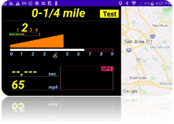
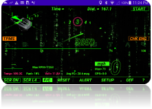
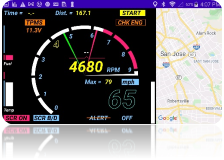
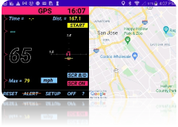
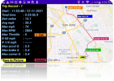

Add-gtr
ADD-GTR is the new
digital dashboard app perfectly fused of the OBD2 + GPS
technology. App is designed with the mind and eyes of an
enthusiastic driver but it’s for everyone. Experience it and
find the new love of your car on a trip.
Performance
- Professionally tuned for super responsive and extremely low latency displaying real-time data (RPM, speed, g-meter, GPS direction, instant fuel consumption...etc.)
· 3x faster in OBD data sampling and processing than the 1st gen app (ADD-111R, ADD-PRO, and ADD-LITE)
- Carefully designed layout and graphics with vivid / contrasting color scheme for easy reading on the road
· New 3D layout graphics, cool “Matrix” theme mode, plus the easy-to-read round swiping RPM with dynamic route and map
- Tons of features are accessible by simplified operations - 95% operations are single touch of a button or swipe left/right/up/down on the screen.
· Comes with handy 0-60mph and quarter mile testing tools, 2D/3D g-meter, Compass, Google map with trip route, and full feature “trip computer”
App Gallery Pictures
|
 |
 |
 |
|
 |
|
|

Comprehensive Vehicle Data Display - all in real-time
- RPM (w/ max. RPM mark)
- Speed
- Max. Speed
- GPS Speed
- Throttle position (w/ max. throttle mark)
- Fuel
- Water temperature
- Instant / Average fuel consumption
- Voltage (Green-normal / Orange-warning)
- CEL/MIL (Check Engine / Malfunction) indicator
- Current Time
- G-meter (2D / 3D) with max. mark on accelerate / brake / eft / right directions
- Vehicle driving direction
- Gear indication / Shift Indication
- Special mode for Lotus Elise / Exige (real gear position read out from Lotus car’s ECU directly)
- Other cars can use simulation mode (with selectable of max. gears from 5th to 9th)
- TPMS (Lotus Elise / Exige only)
- Warning indicator (in orange color) in case of low tire pressure detected - just as your Elise/Exige OEM dashboard
- Display detail pressure for 4 tires (touch the TPMS button) - more info than your Elise/Exige dashboard can provide
Rich Features
- Swipe (left/right) to change for various modes
a. Mode1 (Sports) - display ALL vehicle data with sport-car inspiring vivid 3D bars and graphs (RPM bar, throttle, G-meter, gear-shift indicator)
b. Mode2 (Matrix) - display ALL vehicle data in a cool “The Matrix” theme with the cool comet-flying RPM bar animation
c. Mode3 (Cruising) - display key vehicle data (RPM, Speed, Fuel, water temp, trip computer, direction…) and a real-time map on the right half of the screen
d. Mode4 (0-60mph) - 0-60mph (or 0-100km/h) test mode with RPM, speed, distance, and a map
i. Obey the traffic rule and be responsible for all safety measure
e. Mode5 (0-1/4mile) - 0-1/4mile (or 0-400m) test mode (requires accurate GPS) with RPM, speed, distance, and a map
i. Obey the traffic rule and be responsible for all safety measure
f. Mode6 (GPS) - No OBD needed. If you simply launch the ADDGTR app without any Bluetooth OBD setup, app will start in this mode.
i. Provide accurate GPS speed, max speed, 2D G-meter, vehicle direction, trip computer…
g. Mode7 (History Records) - Showing all saved trip records. (see more details on “Trip Computer” below)
i. Records and shows the route with mark of 3 different max G (approximate location)
ii. Swipe up/down to scroll thru all saved trip records
iii. Simple touch to export current trip record to a picture and share with your friends/teammates - good for track / autocross results check and comparison
iv. Record shows route info in a map with ALL data and some are important such as max. Speed
h. If there is no Bluetooth OBD device or app can’t connect to OBD device - app will only operate in Mode6 and Mode7. Refer Initial setup / OBD connection detailed in the below “How-To” section.
- CEL/MIL warning with clear function
a. CEL (check engine light) / MIL warning (same as your car OEM dashboard)
b. If there is a CEL/MIL - you can touch the CHK ENG button and app will display the error code. You can also clear it if you want
i.
 It’s
suggested that you bring your car to your trusted carshop to
fix the issue. Clear the CEL/MIL does NOT fix the issue if it
is a legit problem.
It’s
suggested that you bring your car to your trusted carshop to
fix the issue. Clear the CEL/MIL does NOT fix the issue if it
is a legit problem.
- Real-time map and route display (in mode3, mode4, mode5, mode6 - requires GPS enabled Android phone and data connection) - you can double tap to zoom in, pinch to zoom in / zoom out.
- Touch the center of the G-meter to calibrate it.
a. If your android phone/device can’t be securely hold in landscape mode 90 degree facing the car direction (either tilted a bit or slightly facing left/right) - you can calibrate it and app will try to compensate the non-ideal position.
- Toggling enable / disable speed alert
- Toggling change for MPH and Km/H units
- Toggling change for Fahrenheit vs Celsius for water temperature display
- Toggling Screen save / always-on.
a. It’s suggested to use plug in power and set to always on (red color) - if you rely on the app to provide you info such as speed, fuel, temp…
- Toggle-cycling through 5 levels of screen brightness - so you can dim the screen for comfortable viewing in nighttime or make it 100% bright in daytime.
- Single touch RESET max. G, max speed, max RPM
- GPS signal accuracy indication (Green / Orange / Red)
- Safe-guard SETUP dialog with simplified configuration
- Auto-save your configuration / selections so no need to configure it next time
- Easy to use Trip Computer
a. Easy to follow 2-button operation (Start - Pause - Resume or Done - Done - Save or NEW)
b. Records ALL data (total distance, total time, max. speed, average speed, max RPM, max Throttle, max G in acceleration, braking, and cornering…)
c. If you try to record a super long trip (>10 hours continuous driving) - due to memory limitation, trip will be recorded as two or more records automatically. A short beep / screen info display notifying trip is automatically saved and re-start. If your device failed to perform auto-save, app will pop up a dialog to remind you save the trip manually before the data overflow the buffer.
How-To (Simple user guide)
1.
 Initial Setup (First time use)
Initial Setup (First time use)
a.
 Do NOT start the app yet
Do NOT start the app yet
b. Connecting the Bluetooth OBD2 dongle
i.
 OBD2 dongle must be Bluetooth type; the WiFi
(wireless) OBD is NOT supported
OBD2 dongle must be Bluetooth type; the WiFi
(wireless) OBD is NOT supported
ii. Insert the Bluetooth OBD2 dongle into the car’s OBD2 socket and turn it on (if it has a power button/switch)
iii. Go to your android phone/device “Setting” and select Connection/Bluetooth
iv. Scan the nearby Bluetooth device and your phone/device shall see the new OBD2 listed (usually with name contains OBD)
v. Select to pair it and it SHOULD ask you to enter the passcode - enter 1234 or 1111 (or reference your OBD2 instruction manual)
1. Make sure your phone /device confirm it “successfully” paired
2. If you are NOT asked to enter passcode - it’s likely the pairing is NOT truly successful (depends on models) as data transmission protocol usually needs secured connection. Please reference your phone/device and OBD2 dongle user manual to resolve it.
c.
 Start up your car -
make sure you can safely park the car with engine running (refer
your car operation manual)
Start up your car -
make sure you can safely park the car with engine running (refer
your car operation manual)
d. Launch the ADDGTR app first time
i.
 The
first time you run the app - it will request your
permission of using GPS. You must grant the GPS access to use
the app.
The
first time you run the app - it will request your
permission of using GPS. You must grant the GPS access to use
the app.
ii. App will exit automatically - if the GPS access is not granted. (GPS is a minimum requirement for this app)
e. Once you grant the GPS access for the ADDGTR, you can click the ADDGTR app and launch it again. It shall go thru the start up process.
i. It may take a bit longer to search/establish the connection to the Bluetooth OBD2 dongle. Please be patient.
ii. If ADDGTR successfully establish the OBD2 connection and run thru initial compatibility check, you will be prompted with two dialogs - read it and click OK to confirm your acknowledge the message. ADDGTR will be working after that.
f.
 If
you see a dialog saying “connecting to OBD failed…” -
try the following
If
you see a dialog saying “connecting to OBD failed…” -
try the following
i. Make sure your Bluetooth OBD2 dongle is properly plugged in and turned on (usually has LED blinking)
ii. Go to your phone/device “Setting” / “Connection” / “Bluetooth” and make sure the OBD2 dongle is properly paired (reference #1.b)
iii. Exit the app (touch the “OFF”) and restart the ADDGTR app
iv.
 It
could still show “connecting to OBD failed” if your phone has
lots of other Bluetooth devices paired (e.g. earphone). After
ADDGTR run thru the dialogs (you click OK), it shall
automatically operate at the GPS mode. Touch the “SETUP” to
invoke the setting dialog
It
could still show “connecting to OBD failed” if your phone has
lots of other Bluetooth devices paired (e.g. earphone). After
ADDGTR run thru the dialogs (you click OK), it shall
automatically operate at the GPS mode. Touch the “SETUP” to
invoke the setting dialog
v. In the setup dialog, the most left side shall list the Bluetooth devices your phone/device paired. Look through it and touch the OBD dongle you paired (usually has OBD as part of the name)
vi. Setup dialog will exit automatically and re-try the OBD2 connection procedure. It will take a while, please wait for it patiently.
vii. If there is NO dialog pops up stating “Connecting OBD failed…” - your OBD2 dongle is now connected. You can try to swipe left/right and enjoy other modes
viii. In some older / less-performance devices, after selecting the right OBD from setup dialog box, the ADDGTR may not be able to establish the connection. Please EXIT the app and re-launch the ADDGTR.
g. In rare occasions, if your OBD device lost connection (may be due to OBD not plugged in securely or lost power) - the ADD-GTR shall detect such error and prompt you to “reconnect” OR “running app in GPS mode”. Don’t be panic - just make sure the OBD is plugged in securely and powered ON and hit the “Reconnect”. Or continue to run the app in GPS mode.
i. Some OBD devices and your car’s ECU may handle the OBD connection lost situation differently. In the worst case, the ADD-GTR can’t recover from such OBD disconnection - just touch the OFF to exit the app, make sure OBD is powered on properly and then restart the ADD-GTR.
2. Commonly used operations
a. Swipe to left / right for change modes
b. In Mode7 (History records) - you can swipe up / down to browse the saved records
c. In Mode1 (Sports), Mode2 (Matrix), Mode3 (Cruising), and Mode5 (GPS) - there is a menu bar in the bottom
i. RESET - to reset current max. speed, max. RPM, max. throttle, max G (in all directions), distance, and trip data… - app will ask you to confirm before executing the reset
ii. ALERT - to toggle enabling / disabling the speed alert.
1. There will be an orange bar crossing the ALERT indicating it is disabled (no beeping when you over the speed limit you setup)
iii. SETUP - to invoke the setup dialog box with following configurable settings (only available in Mode1 and Mode5)
1. OBD - touch to select the OBD dongle from a list of paired Bluetooth device
2. Alert - scroll and touch to select the speed limit for “Speed Alert”
3. Redline RPM
a. You can scroll and touch the redline matching your car
b. OR touch the edit box and enter the exact RPM (e.g. 8258)
4. Anim. - touch On to show app start-up animation or Off to turn off animation
5. gMeter - select 2D or 3D rendering for G-meter (only in Mode1)
6. Gear.Sim - gear simulation
a. If your car is a Lotus Elise/Exige S2 model, ADDGTR will retrieve the gear information from ECU directly so this “gear simulation” is NOT applicable
b. Otherwise, you can choose to touch Off (not displaying gear position) or touch 5, 6, 7, 8, 9 to match your car’s highest gear and ADDGTR will simulate and display the gear position (may not 100% accurate / match your car)
iv. OFF - to exit the app >> app will ask you to confirm before exiting
v. ? - to show a simple user guide, copyright, and contacting email information
d. Tough the button (text in a rectangle) to toggle, enable/disable / check corresponding functions
i. MPH (km/h) - toggle unit change for speed, distance, and fuel consumption
ii. F/C - toggle Fahrenheit vs Celsius for water temperature
iii. SCR ON - toggle screen always-on vs power save mode (red means always on while green means it will follow device power management policy)
iv. SCR B/D - toggle through 5 levels of screen brightness (20% ~ 100%)
v. CEL/MIL - to get error code and clear the error
vi. TPMS - to get detail tire pressure (Lotus Elise / Exige only)
vii. START - to star recording the trip data
viii. PAUSE - to pause recording the trip data
ix. RESUME - to resume recording the trip data
x. DONE - to end recording the trip data
xi. SAVE - to save recorded trip data as a new record
xii. NEW - to initiate / start with a new trip recording >> app will ask you to confirm whether you would drop current non-saved data
3. Advanced / special features
a. 0-60mph (or 0-100km/h) test
i. Please obey all traffic rules. You are fully responsible for this operation.
ii. Swipe to the Mode4
1. Stop your car and stand still
2. Touch the “Test” button - the button will flash “GO!” indicating the test is in the “ready mode”
3. Do the best you can to accelerate to 60mph (or 100km/h - depends on the unit you selected)
4. Once you reach 60mph (or 100km/h) - the app will beep as notifying you the test is completed.
5. Your 0-60mph time will show up in the screen. If GPS is in good signal, the approximate distance will also be displayed.
6. If you change your mind after touch the “Test” button (when GO! Is flashing), touch on the “GO!” will get it back to stand by mode and “Test” button shows up again.
7. If you swipe left/right and change to other modes, the 0-60 testing (either started or not) will be terminated immediately.
iii. Best 0-60mph (or 0-100km/h) record will be recorded (saved) only when you save a trip records - because it’s part of the “trip record”. If you want the best 0-60mph saved, make sure to start a trip and save it. (refer 2.d.vi above)
b. 0-¼ mile (or 0-400m) test
i. Please obey all traffic rules. You are fully responsible for this operation.
ii. Swipe to the Mode5
iii. This mode requires good and strong GPS signal. If GPS signal indicator is not strong (indicator shows in orange or red) - the “Test” button may not show up.
1. Stop your car and stand still
2. Touch the “Test” button - the button will flash “GO!” indicating the test is in the “ready mode”
3. Do the best you can to accelerate to ¼ mile (or 400m - depends on the unit you selected)
4. Once you reach ¼ mile (or 400m) - the app will beep as notifying you the test is completed.
5. Your 0-¼ mile mph time will show up in the screen.
6. If you change your mind after touch the “Test” button (when GO! Is flashing), touch on the “GO!” will get it back to standby mode and “Test” button shows up again.
7. If you swipe left/right and change to other modes, the 0-60 testing (either started or not) will be terminated immediately.
iv. Best 0-¼ mile (or 0-400m) record will be recorded (saved) only when you save a trip records - because it’s part of the “trip record”. If you want the best 0-¼ mile saved, make sure to start a trip and save it. (refer 2.d.vi above)
c. G-meter calibration
i. It’s best you place the phone/device in landscape mode upright and facing driver / car driving direction perpendicularly. This position will yield the most accurate G-force dictation.
ii. In some cases, your phone/device may be tilted a bit or not facing driver/car driving direction perpendicularly à touch the center of the G-meter to calibrate the g-force sensing algorithm
iii. Please obey all traffic rules. You are fully responsible for this operation.
iv. Once you touch the center of the G-meter, an orange rectangle shows up (indicating G-meter is in the “calibration” mode) and message stating “Calibrating G-meter - accelerate and drive straight”
v. Accelerate a bit hard and drive your car STRAIGHT. The calibration procedure will complete shortly and app will update itself to compensate the non-ideal placement of your phone/device
vi. After you exit the app, these calibration data shall be saved…so you do not need to calibrate every time if you don’t change the placement of your phone/device.
d. Throttle position calibration
i. There are many proprietary methods to retrieve the throttle position. Standard OBD command of throttle position seems not 100% consistent from cars to cars (especially older model years).
ii. In case you find the throttle position displayed not exactly match your car (e.g. you had floored the gas for 0-60mph test and the final trip record shows your max. throttle is only 78% - which is definitely not correct) - you can calibrate the throttle pos. display function.
iii. Please obey all traffic rules. You are fully responsible for this operation.
iv.
Swipe and go to Mode7 (History records) - you would see a
button “< Cal.” Right next to the Max. Throttle record
Copyright Aburastar
Aburastar888@gmail.com